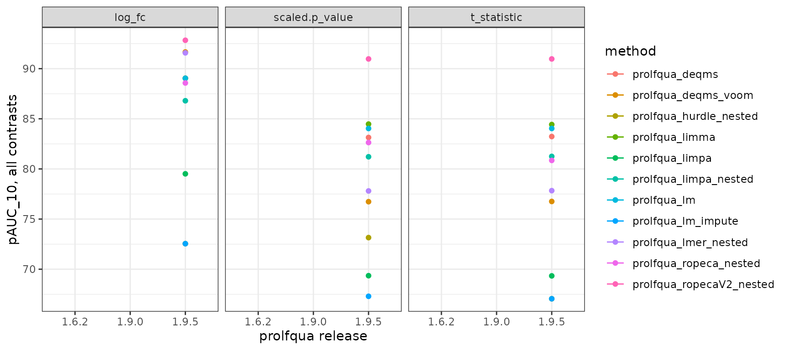
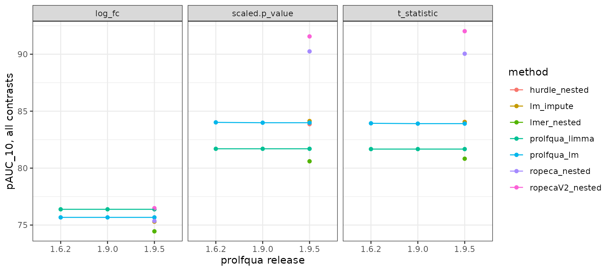
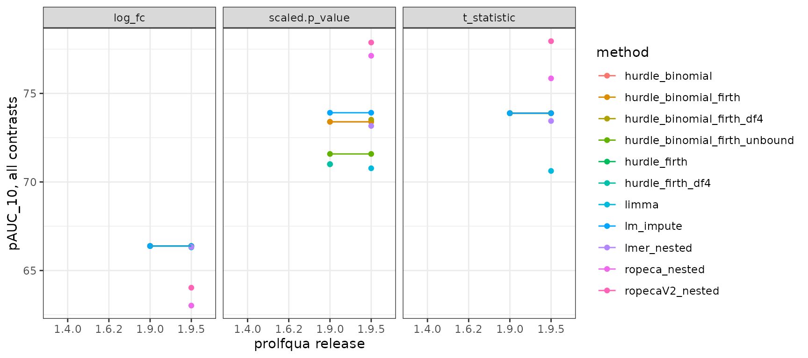
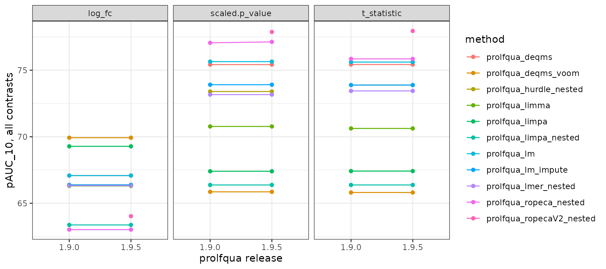
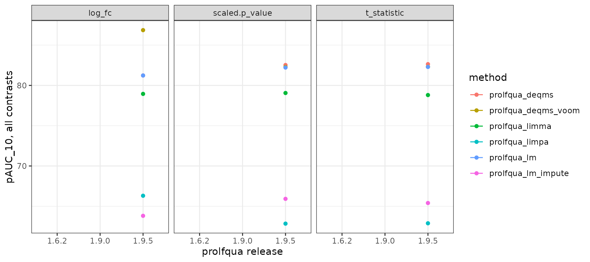
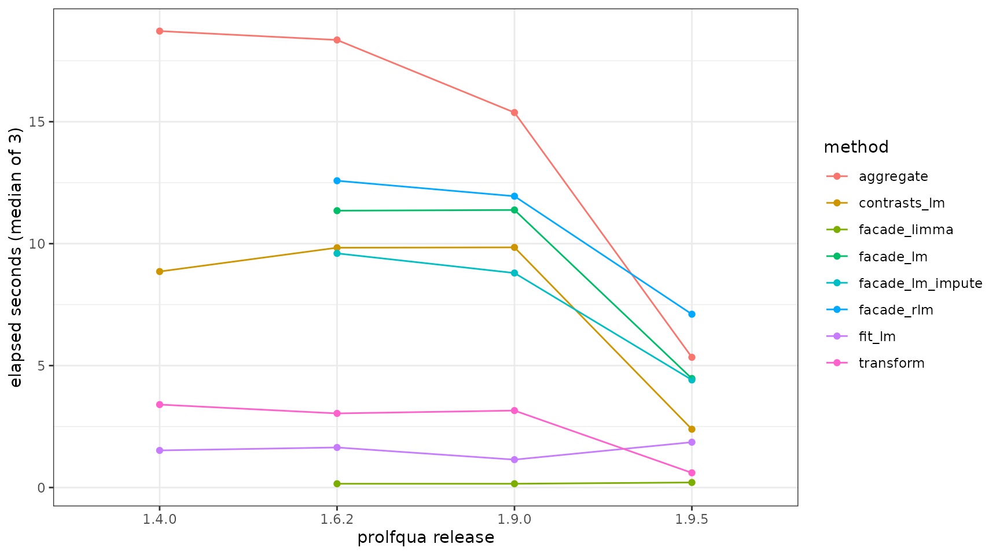

vignettes/Score_history.Rmd
Score_history.Rmdmake score-history runs the benchmark pipeline
(workflow/Snakefile) with the installed prolfqua and
appends its scores and step timings to
inst/extdata/score_history.tsv, one block of rows per
prolfqua release. This vignette reads only that table; the current
results with ROC curves are in the vignette
Benchmark_results.
benchmark_from_file() from the contrasts of
each fit, per contrast and for all contrasts pooled (all),
for the rankings by log_fc, t_statistic and
scaled.p_value
tool_version: the software that fitted the model. Rows
of MSstats, proDA and msqrob2 carry their own version, so a change there
can come from their release instead of prolfqua’sworkflow/scripts/time_prolfqua_steps.R)inst/scripts/prefill_score_history.sh); their
date is the date of the prolfqua commit, and their dataset
and method names were relabelled to the pipeline’s
(inst/scripts/migrate_score_history.R). The vignettes
changed and models were added between releases, so a method’s cells stay
empty for the releases before its vignette ran it. From 1.9.5 on, the
pipeline runs every method on every dataset that provides its input| prolfqua_version | date | datasets | methods | rows |
|---|---|---|---|---|
| 1.6.2 | 2026-05-28 | 3 | 11 | 458 |
| 1.9.0 | 2026-11-02 | 3 | 14 | 908 |
| 1.9.5 | 2026-11-24 | 5 | 64 | 7238 |
Changes of the prolfqua models from the previous recorded release of the same dataset, method, contrast, score and metric: at least 0.5 points for AUC, pAUC and AP, any change for counts.
| release | previous_release | dataset | method | contrast | score | metric | previous | value | delta | previous_tool | tool_version |
|---|---|---|---|---|---|---|---|---|---|---|---|
| 1.9.5 | 1.9.0 | IonStar_FragPipe_protein | prolfqua_limma | all | t_statistic | AP | 89.527 | 90.583 | 1.056 | prolfqua 1.9.0 | prolfqua 1.9.5 |
| 1.9.5 | 1.9.0 | IonStar_FragPipe_protein | prolfqua_limma | dilution_(4.5/3)_1.5 | t_statistic | AP | 81.621 | 82.334 | 0.714 | prolfqua 1.9.0 | prolfqua 1.9.5 |
| 1.9.5 | 1.9.0 | IonStar_FragPipe_protein | prolfqua_limma | dilution_(6/4.5)_1.3(3) | t_statistic | AP | 93.656 | 95.171 | 1.515 | prolfqua 1.9.0 | prolfqua 1.9.5 |
| 1.9.5 | 1.9.0 | IonStar_FragPipe_protein | prolfqua_limma | dilution_(7.5/6)_1.25 | t_statistic | AP | 88.788 | 89.918 | 1.130 | prolfqua 1.9.0 | prolfqua 1.9.5 |
| 1.9.5 | 1.9.0 | IonStar_FragPipe_protein | prolfqua_limma | all | t_statistic | pAP_50 | 98.090 | 99.178 | 1.088 | prolfqua 1.9.0 | prolfqua 1.9.5 |
| 1.9.5 | 1.9.0 | IonStar_FragPipe_protein | prolfqua_limma | dilution_(6/4.5)_1.3(3) | t_statistic | pAP_50 | 96.574 | 98.524 | 1.950 | prolfqua 1.9.0 | prolfqua 1.9.5 |
| 1.9.5 | 1.9.0 | IonStar_FragPipe_protein | prolfqua_limma | dilution_(7.5/6)_1.25 | t_statistic | pAP_50 | 95.105 | 96.688 | 1.583 | prolfqua 1.9.0 | prolfqua 1.9.5 |
| 1.9.5 | 1.9.0 | IonStar_FragPipe_protein | prolfqua_limma | all | t_statistic | pAP_80 | 97.383 | 98.516 | 1.133 | prolfqua 1.9.0 | prolfqua 1.9.5 |
| 1.9.5 | 1.9.0 | IonStar_FragPipe_protein | prolfqua_limma | dilution_(4.5/3)_1.5 | t_statistic | pAP_80 | 97.938 | 98.807 | 0.869 | prolfqua 1.9.0 | prolfqua 1.9.5 |
| 1.9.5 | 1.9.0 | IonStar_FragPipe_protein | prolfqua_limma | dilution_(6/4.5)_1.3(3) | t_statistic | pAP_80 | 97.102 | 98.751 | 1.649 | prolfqua 1.9.0 | prolfqua 1.9.5 |
| 1.9.5 | 1.9.0 | IonStar_FragPipe_protein | prolfqua_limma | dilution_(7.5/6)_1.25 | t_statistic | pAP_80 | 94.677 | 96.047 | 1.370 | prolfqua 1.9.0 | prolfqua 1.9.5 |
| 1.9.5 | 1.9.0 | IonStar_FragPipe_protein | prolfqua_limma | all | t_statistic | pAUC_10 | 85.946 | 86.848 | 0.902 | prolfqua 1.9.0 | prolfqua 1.9.5 |
| 1.9.5 | 1.9.0 | IonStar_FragPipe_protein | prolfqua_limma | dilution_(4.5/3)_1.5 | t_statistic | pAUC_10 | 78.465 | 79.235 | 0.770 | prolfqua 1.9.0 | prolfqua 1.9.5 |
| 1.9.5 | 1.9.0 | IonStar_FragPipe_protein | prolfqua_limma | dilution_(6/4.5)_1.3(3) | t_statistic | pAUC_10 | 91.354 | 92.342 | 0.988 | prolfqua 1.9.0 | prolfqua 1.9.5 |
| 1.9.5 | 1.9.0 | IonStar_FragPipe_protein | prolfqua_limma | dilution_(7.5/6)_1.25 | t_statistic | pAUC_10 | 84.233 | 84.984 | 0.750 | prolfqua 1.9.0 | prolfqua 1.9.5 |
One table per dataset: one row per model and prolfqua release,
columns metric / ranking score (log_fc,
t_statistic, scaled.p_value), all contrasts
pooled. A model has no row for a release whose vignettes did not run it.
MSstats, proDA and msqrob2 follow at the end of the table, labelled with
their version, with their latest recorded scores only: they change with
their own releases, not with prolfqua’s. The plots show the prolfqua
models.
| model | level | release | AUC / log_fc | AUC / scaled.p_value | AUC / t_statistic | pAUC_10 / log_fc | pAUC_10 / scaled.p_value | pAUC_10 / t_statistic |
|---|---|---|---|---|---|---|---|---|
| prolfqua_deqms | protein | 1.9.5 | 93.4 | 92.6 | 92.6 | 89.0 | 83.1 | 83.2 |
| prolfqua_deqms_voom | protein | 1.9.5 | 94.5 | 92.5 | 92.5 | 91.7 | 76.7 | 76.8 |
| prolfqua_hurdle_nested | protein + peptide | 1.9.5 | 86.5 | 84.6 | 85.3 | 72.5 | 73.2 | 67.1 |
| prolfqua_limma | protein | 1.9.5 | 93.4 | 92.8 | 92.7 | 89.0 | 84.5 | 84.4 |
| prolfqua_limpa | protein | 1.9.5 | 91.5 | 89.3 | 89.3 | 79.5 | 69.4 | 69.3 |
| prolfqua_limpa_nested | peptide | 1.9.5 | 97.6 | 95.4 | 95.4 | 86.8 | 81.2 | 81.3 |
| prolfqua_lm | protein | 1.9.5 | 93.4 | 92.7 | 92.7 | 89.0 | 84.0 | 84.0 |
| prolfqua_lm_impute | protein | 1.9.5 | 86.5 | 85.3 | 85.3 | 72.5 | 67.3 | 67.1 |
| prolfqua_lmer_nested | peptide | 1.9.5 | 93.9 | 90.8 | 90.8 | 91.6 | 77.8 | 77.8 |
| prolfqua_ropecaV2_nested | peptide | 1.9.5 | 96.5 | 96.4 | 96.4 | 92.8 | 91.0 | 91.0 |
| prolfqua_ropeca_nested | peptide | 1.9.5 | 91.8 | 93.0 | 95.1 | 88.6 | 82.6 | 80.9 |
| msqrob2 1.20.0 | protein + peptide | 1.9.5 | 91.2 | 89.1 | 88.8 | 72.5 | 68.9 | 66.1 |
| msqrob2_hurdle (msqrob2 1.20.0) | protein + peptide | 1.9.5 | 91.2 | 90.0 | 88.8 | 72.5 | 74.0 | 66.1 |

| model | level | release | AUC / log_fc | AUC / scaled.p_value | AUC / t_statistic | pAUC_10 / log_fc | pAUC_10 / scaled.p_value | pAUC_10 / t_statistic |
|---|---|---|---|---|---|---|---|---|
| prolfqua_deqms | protein | 1.9.5 | 95.9 | 96.9 | 96.9 | 77.7 | 86.2 | 86.2 |
| prolfqua_deqms_voom | protein | 1.9.5 | 96.2 | 97.1 | 97.1 | 79.0 | 86.1 | 86.1 |
| prolfqua_hurdle_nested | protein + peptide | 1.9.5 | 95.1 | 95.9 | 96.1 | 75.3 | 83.9 | 84.1 |
| prolfqua_limma | protein | 1.6.2 | 94.2 | 94.9 | 94.9 | 76.4 | 81.7 | 81.7 |
| prolfqua_limma | protein | 1.9.0 | 94.2 | 94.9 | 94.9 | 76.4 | 81.7 | 81.7 |
| prolfqua_limma | protein | 1.9.5 | 94.2 | 94.9 | 94.9 | 76.4 | 81.7 | 81.7 |
| prolfqua_limpa | protein | 1.9.5 | 94.0 | 94.6 | 94.6 | 77.6 | 78.6 | 78.6 |
| prolfqua_limpa_nested | peptide | 1.9.5 | 95.2 | 94.6 | 94.6 | 75.2 | 72.9 | 72.9 |
| prolfqua_lm | protein | 1.9.5 | 95.9 | 96.9 | 96.9 | 77.7 | 86.2 | 86.2 |
| prolfqua_lm_impute | protein | 1.9.5 | 95.1 | 96.1 | 96.1 | 75.3 | 84.1 | 84.1 |
| prolfqua_lmer_nested | peptide | 1.9.5 | 95.5 | 96.0 | 96.0 | 74.5 | 80.6 | 80.8 |
| prolfqua_ropecaV2_nested | peptide | 1.9.5 | 96.0 | 97.6 | 98.3 | 76.5 | 91.6 | 92.0 |
| prolfqua_ropeca_nested | peptide | 1.9.5 | 95.8 | 97.7 | 98.1 | 75.4 | 90.2 | 90.0 |
| MSstats 4.20.0 | protein | 1.9.5 | 91.9 | 95.0 | 94.9 | 52.5 | 76.1 | 75.3 |
| msqrob2 1.20.0 | protein + peptide | 1.9.5 | 95.3 | 96.1 | 96.1 | 77.3 | 83.4 | 83.1 |
| msqrob2_hurdle (msqrob2 1.20.0) | protein + peptide | 1.9.5 | 95.3 | 96.0 | 96.1 | 77.3 | 83.9 | 83.1 |

| model | level | release | AUC / log_fc | AUC / scaled.p_value | AUC / t_statistic | pAUC_10 / log_fc | pAUC_10 / scaled.p_value | pAUC_10 / t_statistic |
|---|---|---|---|---|---|---|---|---|
| prolfqua_deqms | protein | 1.9.5 | 97.0 | 98.3 | 98.3 | 80.1 | 91.6 | 91.7 |
| prolfqua_deqms_voom | protein | 1.9.5 | 98.1 | 98.2 | 98.1 | 85.7 | 88.0 | 87.9 |
| prolfqua_limma | protein | 1.6.2 | 92.8 | 93.9 | 93.8 | 76.9 | 87.1 | 85.9 |
| prolfqua_limma | protein | 1.9.0 | 92.8 | 93.9 | 93.8 | 76.9 | 87.1 | 85.9 |
| prolfqua_limma | protein | 1.9.5 | 92.8 | 93.9 | 93.9 | 76.9 | 87.4 | 86.8 |
| prolfqua_limpa | protein | 1.9.5 | 90.9 | 91.6 | 91.6 | 75.6 | 74.4 | 74.4 |
| prolfqua_lm | protein | 1.9.5 | 97.0 | 98.3 | 98.3 | 80.1 | 91.8 | 91.7 |
| prolfqua_lm_impute | protein | 1.9.5 | 93.1 | 94.2 | 94.1 | 70.1 | 80.4 | 79.4 |
| msqrob2_protein (msqrob2 1.20.0) | protein | 1.9.5 | 98.2 | 99.2 | 99.2 | 86.6 | 96.1 | 95.8 |
| proDA 1.26.0 | protein | 1.9.5 | 91.9 | 94.2 | 94.2 | 61.7 | 80.0 | 80.0 |

| model | level | release | AUC / log_fc | AUC / scaled.p_value | AUC / t_statistic | pAUC_10 / log_fc | pAUC_10 / scaled.p_value | pAUC_10 / t_statistic |
|---|---|---|---|---|---|---|---|---|
| prolfqua_deqms | protein | 1.9.5 | 92.8 | 93.5 | 93.5 | 67.1 | 75.4 | 75.4 |
| prolfqua_deqms_voom | protein | 1.9.5 | 94.0 | 92.5 | 92.5 | 69.9 | 65.9 | 65.8 |
| prolfqua_hurdle_nested | protein + peptide | 1.9.0 | 92.3 | 92.5 | 92.8 | 66.4 | 73.4 | 73.9 |
| prolfqua_hurdle_nested | protein + peptide | 1.9.5 | 92.3 | 92.5 | 92.8 | 66.4 | 73.4 | 73.9 |
| prolfqua_limma | protein | 1.6.2 | 91.5 | 91.6 | 91.6 | 66.3 | 70.8 | 70.6 |
| prolfqua_limma | protein | 1.9.0 | 91.5 | 91.6 | 91.6 | 66.3 | 70.8 | 70.6 |
| prolfqua_limma | protein | 1.9.5 | 91.5 | 91.6 | 91.6 | 66.3 | 70.8 | 70.6 |
| prolfqua_limpa | protein | 1.9.5 | 91.7 | 91.2 | 91.2 | 69.3 | 67.4 | 67.4 |
| prolfqua_limpa_nested | peptide | 1.9.5 | 92.6 | 92.1 | 92.1 | 63.4 | 66.4 | 66.4 |
| prolfqua_lm | protein | 1.9.5 | 92.8 | 93.6 | 93.6 | 67.1 | 75.6 | 75.6 |
| prolfqua_lm_impute | protein | 1.9.0 | 92.3 | 92.8 | 92.8 | 66.4 | 73.9 | 73.9 |
| prolfqua_lm_impute | protein | 1.9.5 | 92.3 | 92.8 | 92.8 | 66.4 | 73.9 | 73.9 |
| prolfqua_lmer_nested | peptide | 1.9.5 | 92.6 | 93.0 | 93.1 | 66.3 | 73.2 | 73.4 |
| prolfqua_ropecaV2_nested | peptide | 1.9.5 | 92.0 | 93.7 | 94.1 | 64.0 | 77.9 | 77.9 |
| prolfqua_ropeca_nested | peptide | 1.9.5 | 91.8 | 93.6 | 94.0 | 63.0 | 77.1 | 75.8 |
| msqrob2 1.20.0 | protein + peptide | 1.9.5 | 92.6 | 93.0 | 93.0 | 66.2 | 73.1 | 72.9 |
| msqrob2_hurdle (msqrob2 1.20.0) | protein + peptide | 1.9.5 | 92.6 | 92.8 | 93.0 | 66.2 | 73.6 | 72.9 |

| model | level | release | AUC / log_fc | AUC / scaled.p_value | AUC / t_statistic | pAUC_10 / log_fc | pAUC_10 / scaled.p_value | pAUC_10 / t_statistic |
|---|---|---|---|---|---|---|---|---|
| prolfqua_deqms | protein | 1.9.5 | 95.6 | 95.6 | 95.6 | 81.2 | 82.5 | 82.6 |
| prolfqua_deqms_voom | protein | 1.9.5 | 97.0 | 96.3 | 96.3 | 86.9 | 82.3 | 82.3 |
| prolfqua_limma | protein | 1.9.5 | 92.7 | 92.7 | 92.7 | 78.9 | 79.1 | 78.8 |
| prolfqua_limpa | protein | 1.9.5 | 87.2 | 86.9 | 86.9 | 66.3 | 62.8 | 62.9 |
| prolfqua_lm | protein | 1.9.5 | 95.6 | 95.6 | 95.6 | 81.2 | 82.2 | 82.3 |
| prolfqua_lm_impute | protein | 1.9.5 | 87.9 | 88.3 | 88.1 | 63.8 | 65.9 | 65.4 |
| msqrob2_protein (msqrob2 1.20.0) | protein | 1.9.5 | 97.1 | 97.2 | 97.2 | 86.9 | 88.0 | 87.9 |
| proDA 1.26.0 | protein | 1.9.5 | 87.1 | 88.7 | 88.7 | 49.7 | 65.8 | 65.8 |

Median elapsed seconds over 3 repetitions, IonStar MaxQuant peptides,
all proteins with at least 2 peptides. transform: log2 and
robust scaling on the human proteins; aggregate: median
polish to proteins; fit_lm: one lm per protein;
contrasts_lm: Wald contrasts with variance moderation;
facade_<method>:
build_contrast_analysis(), fit and contrasts. Timings
compare only within one machine: R 4.6.2 aarch64-apple-darwin23.
| release | aggregate | contrasts_lm | facade_limma | facade_lm | facade_lm_impute | facade_rlm | fit_lm | transform |
|---|---|---|---|---|---|---|---|---|
| 1.6.2 | 18.35 | 9.83 | 0.15 | 11.35 | 9.60 | 12.58 | 1.64 | 3.04 |
| 1.9.0 | 15.38 | 9.85 | 0.15 | 11.38 | 8.80 | 11.95 | 1.14 | 3.15 |
| 1.9.5 | 5.45 | 2.49 | 0.16 | 4.85 | 4.50 | 7.23 | 1.93 | 0.18 |
